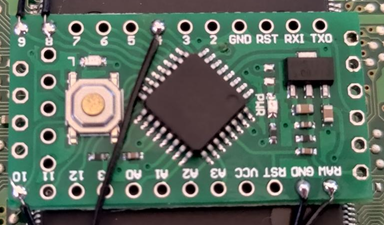

-

PSXTAL
A true multiregion solution for the iconic Playstation 1 console, I coded a simple program using the adafruit library and arduino C++ to sense
a signal pin and switch the frequencies provided to the Graphics Processing Unit dependent on the game region / BIOS region of the console.
-
VajNES-JS
This project is a work-in-progress Nintendo Entertainment System Emulator. Users can load a game ROM for the system and step through its instructions until
they reach one that hasn't been implemented yet. While doing so, they can observe RAM allocations and multiple register bit updates, with pertinent information
displayed at each step. The screen size can be adjusted, and the emulator can simulate vintage CRT effects. I incorporated transparency using layers and a test image,
enabling users to experience classic CRT television effects such as scanlines and grilles. There's an option to select from various backgrounds; the app saves your
preference locally and retrieves it upon reopening.
This emulator is a JavaScript adaptation of a program I initially developed in C++.
-
PS2 Batch ISO Renaming Tool
When transferring games from the Playstation 2 to your PC, they typically save under their game ID instead of the game title. My application streamlines this process.
You simply place a provided database text file (which will be updated as needed) in the same directory as my C++ application. The app scans its directory for all ISO files
and generates a 'work list' text file with this data. It then examines specific locations within the ISO files that indicate where the disc's files are located. Subsequently,
the app loads a particular file's contents into RAM as a variable, searches for the GAMEID, references the GAMEID in the database, and renames the ISO file using the corresponding
game title. The program is configured to process and rename up to 1,000 images nearly instantaneously in this manner.
Developing this tool necessitated research into the ISO-9660 file system used for optical disc media.
-

UberNee / UberChip
UberChip began as a timing-based modchip designed to circumvent the original Sony Playstation's security and region locks. Although there were several iterations,
a timing-based UberChip would achieve, at best, 99% compatibility with the entire software library for the system. I then sought to develop a modchip that would be
fully compatible with the entire software library, but with unique enhancements. This led to the creation of UberNee, a complete rewrite of PSNEE V7 with my personal
improvements. It doesn't waste time during boot-up to verify the system it's installed in, and it provides an additional signal that some systems need.
Users can choose to either wire this up or omit it. Its code is cleaner, more readable, and allows for straightforward adjustments prior to flashing by merely tweaking
a few variables to account for region selection and drive wear levels. UberNee also offers a debug screen, enabling users to monitor events live in a development setting.
The chip is compatible with all console revisions, with extra region unlock features for specific system models with a restricted BIOS. Initially written for the Atmega 328P,
UberNee was later aimed at the LGT8F328P, a more cost-effective alternative at that time. Specific libraries were selected to achieve accurate timing.
The final version is adaptable and can work with either microcontroller. The chip is coded in C++ and utilizes the Arduino IDE. Additionally, there's a PIC version of UberNee
tailored for 12F628A and 12F675 microcontrollers, crafted using the bare assembly language detailed in the datasheet/s. This PIC version also supports the installation of status
LEDs to indicate which of the 3 chip modes is active.
-
SNES / Super Famicom In Game Reset
I was curious about the communication protocol of the Super Nintendo Entertainment System (SNES) / Super Famicom, so I turned to Google. Using the information I found, without
the need for personal signal analysis, I swiftly wrote a C++ program that enables users to reset the console directly from the controller—a feature absent in the original design.
This functionality proves particularly useful nowadays for multi-game cartridges, allowing users to return to the game selection menu without physically interacting with the console.
I later revised the program to include the option of connecting a few extra wires, which permit toggling between 50/60hz modes and enabling/disabling the onboard CIC chip using
specific controller combinations. The status of the CIC chip is stored in flash RAM until it's modified for subsequent boots. However, the video mode defaults to its native 50hz upon
startup (though this can be altered). This software was developed for the Atmega 168P / 328P microcontroller, changes are easily made using the debug printouts in a development
environment.
-
PS1 In Game Reset
I wanted the ability to sniff the PS1 communications BUS to detect button presses. While the existing code for a different microcontroller worked well, I found it somewhat convoluted
for its purpose. I developed my own version using an LGT8F328P microcontroller and implemented a bit-banging algorithm to monitor the comms BUS. The code is concise, easily readable,
and adjustments can be made effortlessly using the debug printouts in a development environment. This setup enables the use of two reset combinations available on the Xstation Optical drive Emulator:
a short reset for games and a long reset to return to the game selection menu.
-

Game Of Memory
After a class introduced us to some fundamentals—specifically, how to hide and show a flex box card—I realised that was all I needed to develop a memory game. Utilising the principles
taught in that session, I crafted a game that features various difficulty levels and a timer indicating how many attempts remain before it's game over. Admittedly, it might be a tad
challenging right now, and it's possibly a bit unfair that it doesn't reveal the second card selection on a failed attempt. But, the foundational framework is all in place!